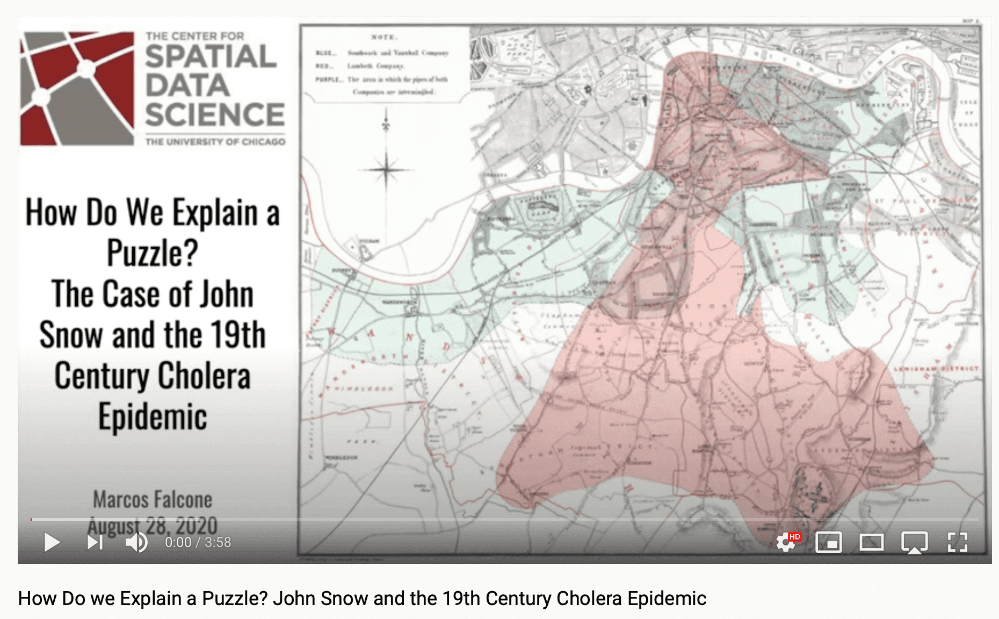

Chapter 3 The Case of John Snow and the Cholera Epidemic
How demarcation helped John Snow figure out that water caused cholera to spread in the 19th century

Source: Wikipedia
{kind=link}
The Puzzle
In the mid-19th century, cholera was claiming the lives of thousands in London. But how did the disease spread? In other words, what was the main mode of transmission of cholera?
For an overview of this case, see our introductory story map and video.

The Research Design
To answer that question, a doctor named John Snow developed a waterborne theory of cholera and then studied the locations where the disease was prevalent as well as those where it was not, along with specific locations where water suppliers varied.

By demarcating cases in this way and testing his theory at both a micro (Soho) and a macro level (South London), Snow was able to gather evidence that was compatible with the waterborne theory of cholera but was harder to account for by the airborne theory.
For more detail on the research designs devised by Snow and his contemporaries, see our specialized story map and video.
The Tools
Using cluster analysis and other statistical techniques like conditional plots and averages charts, it is today possible to replicate and illustrate Snow’s analyses with our GeoDa demo scripts.


The Insights
Snow used a natural experiment to find out that cholera cases concentrated in groups of people who relied on specific water supply mechanisms, whereas groups which relied on a different water supply were not affected even if they were located right next to clusters of infections.

For more information: